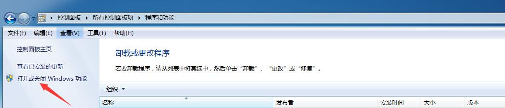
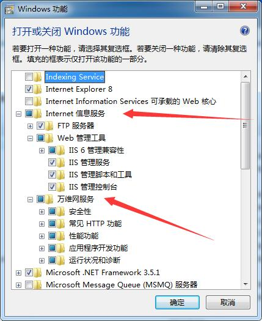
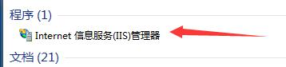
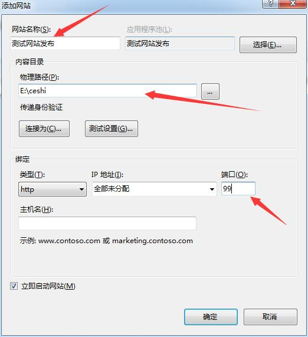
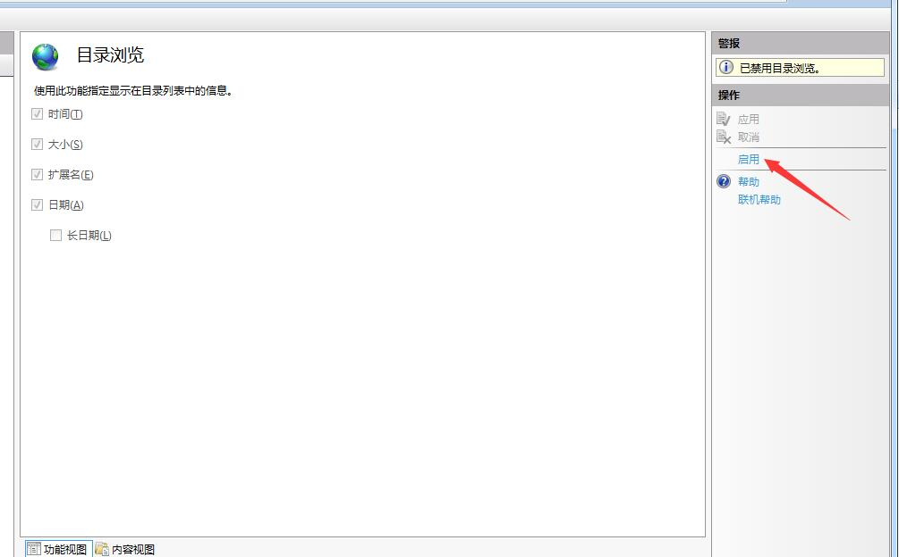
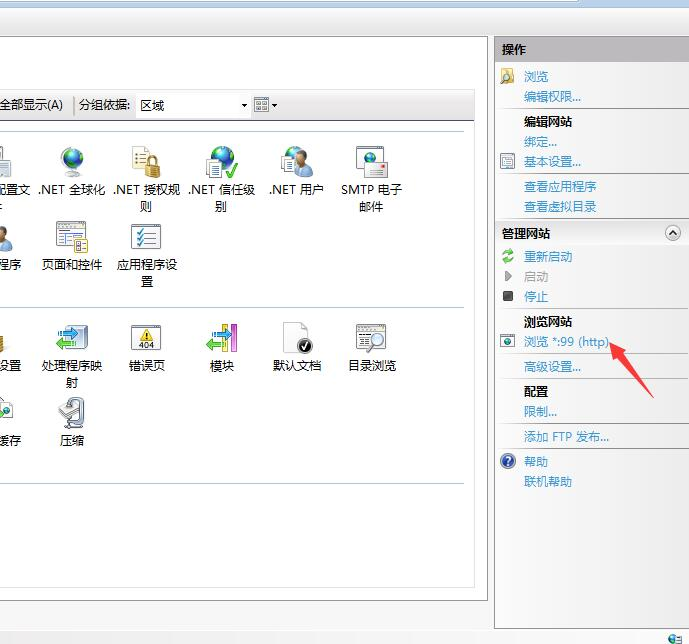
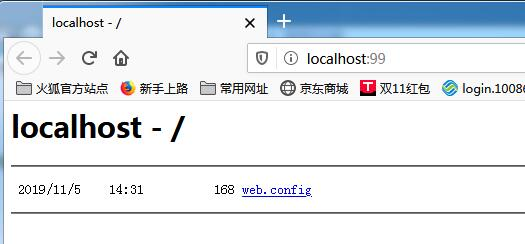
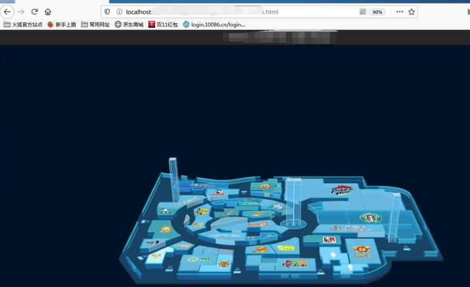

因项目需要，正在学习如何部署IIS服务，并发布网站，发布以后，运行网页，具体步骤如下：
一、IIS的部署
在进行部署前，需要将一些必要的配置选好，如图：

打开选项，进行设置，将箭头部分进行勾选

在window搜索框，搜索IIS，找到internet 信息服务（IIS）

打开IIS，进行相关内容的添加和设置，打开后在左侧位置的网站选项下点击右键，选择添加网站选项如图：

对上图中的箭头位置进行解释一下，网站名称自己根据需要可以起一个易记的名字，物理路径去选择一个硬盘位置，存放文件，端口号，找一个
不是80的，不被占用的端口号点击确定。
在功能视图的界面找到目录浏览，选择启动

二、发布网站
点击右侧的浏览，发布网站

点击以后，发布成功。如图所示：

三、运行网页
将相应的DEMO文件放入选择的物理路径下，进行发布，如图运行了一个DEMO文件。
